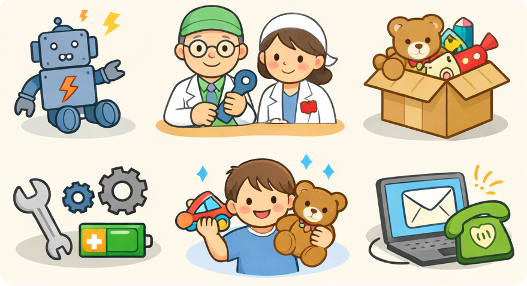

お知らせ・更新情報
更新日：2026-1-17
2026年2月以降は （後編）ふなばしおもちゃの病院 をご覧ください。
当病院の活動は YouTube でも公開されています。
2025.6 診断・修理に受付できないおもちゃを追記
2026/1/31 ふなばし市民活動フェアーに参加します（船橋FACS）
2月の開催予定
1/24（土）13:30～15:30 ウェルシア船橋藤原店
2/1（日）10:00～15:00 八千代緑が丘イオンモール
2/14（土）9:30～12:00 金杉台児童ホーム
2/14（土）9:30～12:00 三咲公民館
2/21（土）9:30～12:00 船橋市西部公民館
2/22（日）10:00～12:00 小室公民館
2/28（土）9:30～12:00 坪井公民館
2/28（土）13:30～15:30 ウェルシア船橋藤原店
どんな活動？
ふなばし「おもちゃの病院」は、壊れたおもちゃを修理・復元するボランティアグループです。
原則無料で、部品代（100～200円程度）のみ実費をお願いする場合があります。
物を大切にする心を、子どもたちに伝える活動を続けています。
組織の紹介
2006年開院。2023年は開催実績85回、依頼実績1890件、完治率97.8%。
所定講習を修了したおもちゃドクター21名（女医3名）が活動しています。
全国組織「日本おもちゃ病院協会」などとも連携しています。